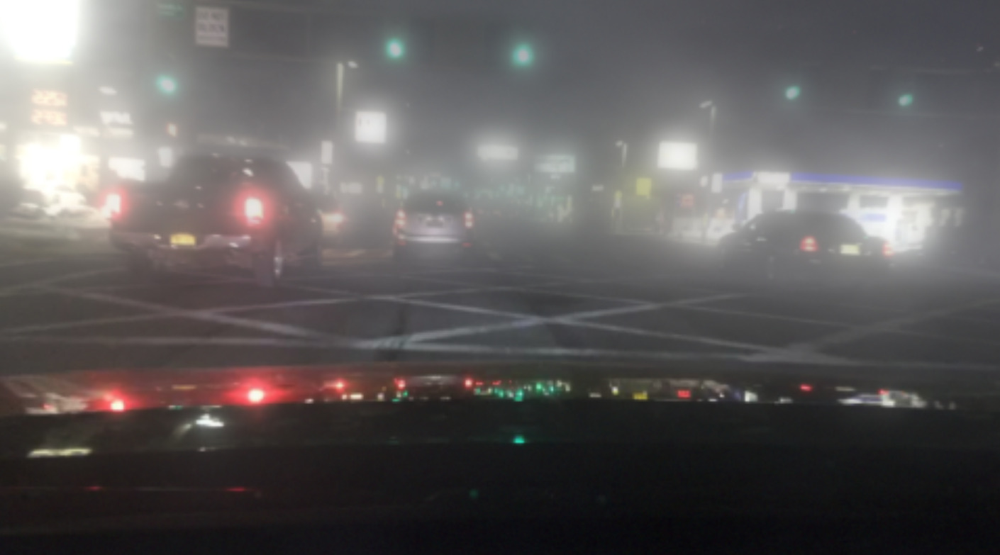
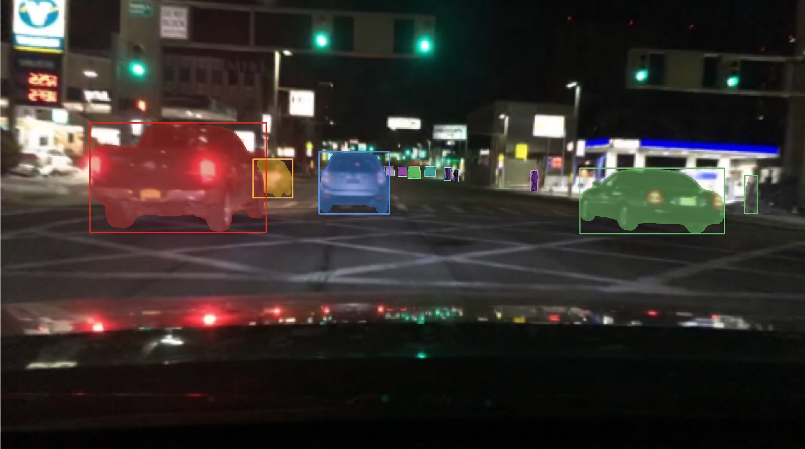
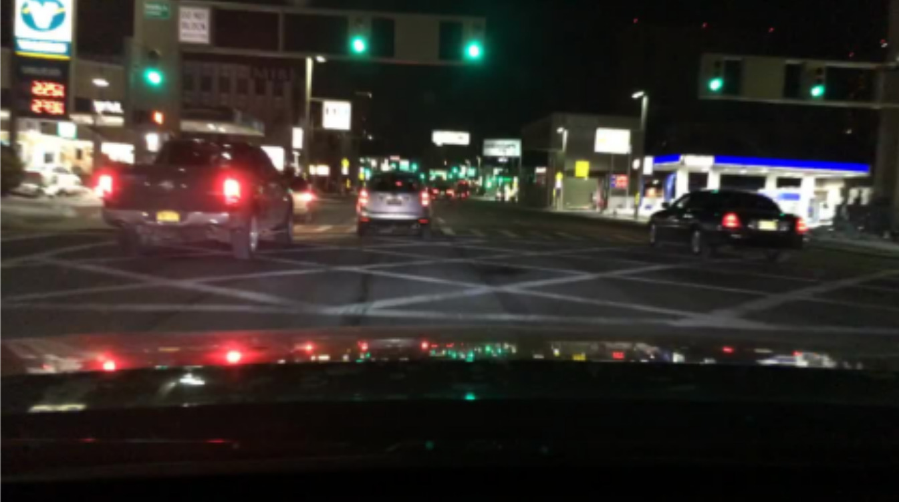

ClearVision AI
“See Beyond the Fog”
An AI-powered road visibility enhancement concept designed to help drivers and smart vehicles perceive lanes, vehicles, and obstacles clearly in dense fog.
Why Fog Makes Driving Dangerous
Dense fog scatters light, washes out road contrast, and hides hazards until they are dangerously close—putting both human drivers and standard camera systems at risk.
Interactive Fog Visibility Simulator
Adjust fog density to see how visual cues disappear on the road

Moderate fog blurs lane markings and softens contrast, making distance harder to judge.
Headlight Glare & Scattering
Tiny water droplets bounce headlight beams back toward the driver, creating a bright veil instead of illuminating the road ahead.
Hidden Lanes & Vehicles
Lane boundaries, road edges, and unlit obstacles fade into gray mist, leaving drivers with very little reaction time.
Standard Camera Blindness
Conventional visible-light dashcams and driver-assist sensors lose contrast in fog just like the human eye.
From Foggy Input to Clear Road Awareness
ClearVision AI combines multi-spectrum camera feeds with deep-learning dehazing to reconstruct a crisp, high-contrast view of the road.
Multi-spectrum vehicle cameras continuously observe the foggy road environment, capturing both visible and infrared signals.
Interactive Concept Preview: Before vs. After AI Dehazing
Drag the handle left or right to compare foggy input with the conceptual enhanced view

Note: Illustrative concept visualization only — not live AI inference or experimental output.
Multi-Spectrum Sensing & AI Dehazing
No single camera sees everything in thick fog. ClearVision AI is designed around three complementary camera wavelengths fused together by an AI dehazing model.
RGB Camera — Visible Light View
Illustrative representation of how this sensor perceives a foggy road

Built for Smart Vehicles & ADAS
Beyond helping human drivers see clearly, ClearVision AI can feed reliable visibility data directly into next-generation Advanced Driver Assistance Systems.